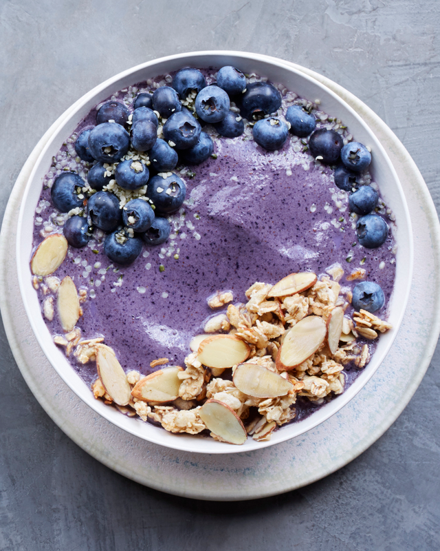

Blueberry Smoothie Bowl

Description
Who says smoothies are only for sipping? Blend together frozen blueberries, almond milk, almond butter, and vanilla until ultra-creamy and divine. Once you divide into two bowls, decorate with fresh blueberries, hemp seeds, vanilla granola, and more for the breakfast bowl of your dreams.
Ingredients
- 1 c. frozen blueberries
- 1/2 c. unsweetened almond milk
- 1 1/2 scoops protein powder
- 2 tbsp. unsweetened almond butter
- 1 tbsp. pure vanilla extract
- 1/2 c. fresh blueberries
- 1/4 c. vanilla granola
- 2 tbsp sliced almonds
- 2 tsp. hemp seeds
- 1 tsp. ground cinnamon
Steps
- In blender, puree frozen blueberries, almond milk, protein powder, almond butter, and vanilla until creamy. Divide between two bowls.
- Top each bowl with fresh blueberries, granola, almonds, hemp seeds, and cinnamon before serving.
Nutrition per serving: 370 cal, 25 g pro, 32 g carb, 7 g fiber, 16 g sugars (4 g added sugars), 17 g fat (2.5 g sat fat), 0 mg cholesterol, 130 mg sodium